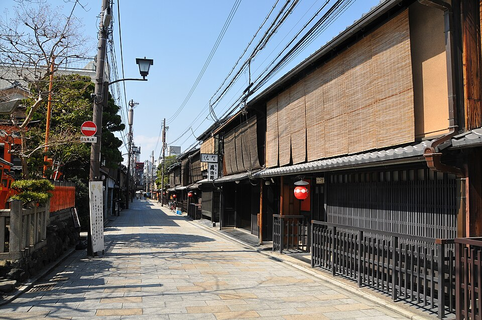
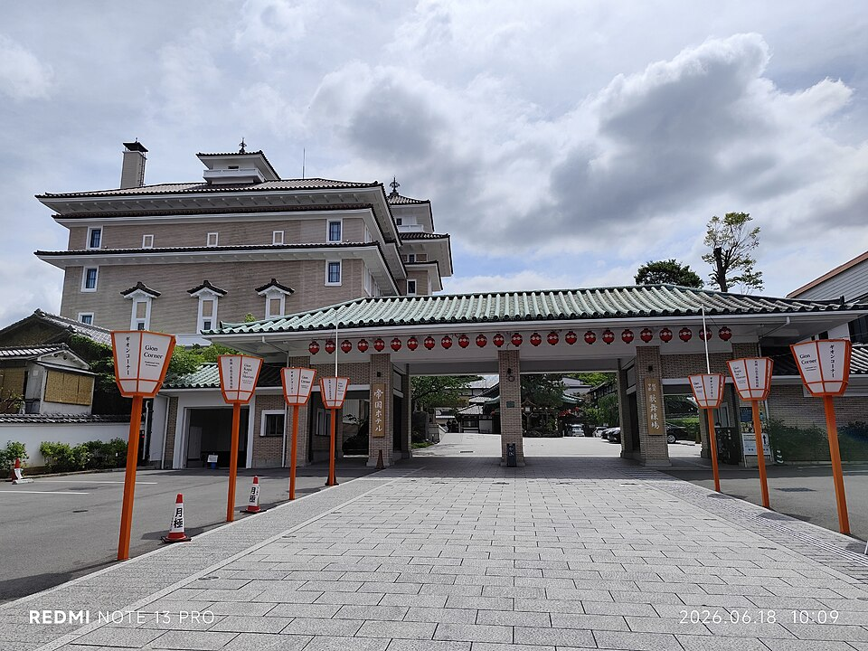
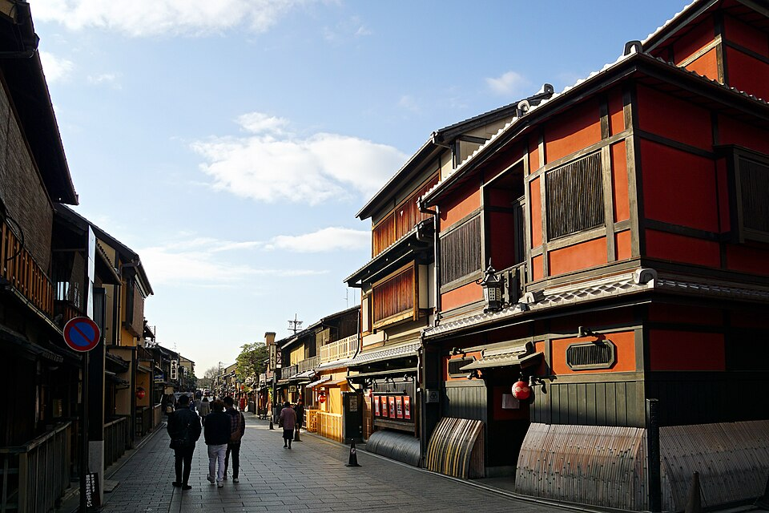
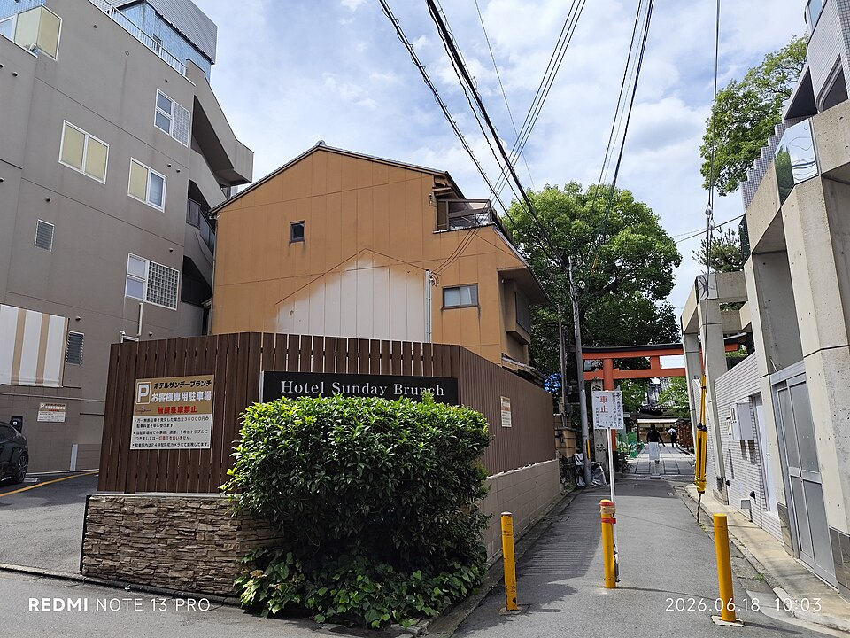
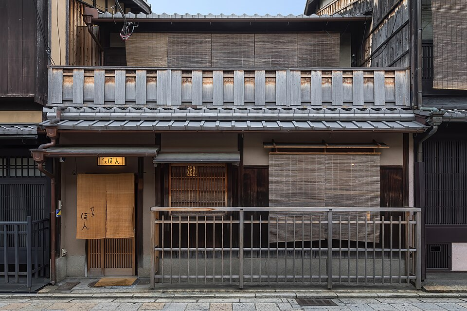
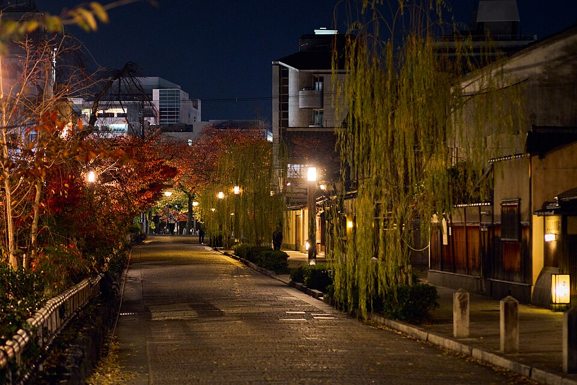

3Gion / Hanamikoji
Higashiyama · ~15 мин автобус 100/206 от отеля







Старейший квартал гейш и майко Kyoto, сложился в XVII веке у входа в святилище Yasaka. Улица Hanamikoji - деревянные тямия (чайные дома) вдоль каналов, в них всё ещё принимают по рекомендации. Это не музей: обычные жилые и рабочие дома, сниматься с майко без согласия запрещено законом.
Свободный вход, лучшее время - раннее утро или день, когда улицы пустые.
Рядом


Фото: Wikimedia Commons (лицензии под каждым фото). Часы и цены проверены 20.10.2026 по путеводителям и официальным сайтам - перепроверь перед визитом, сезонно меняются. ← ко всем местам